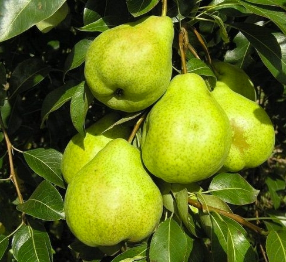
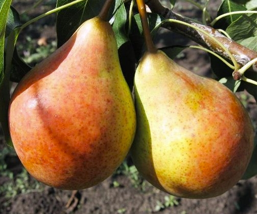
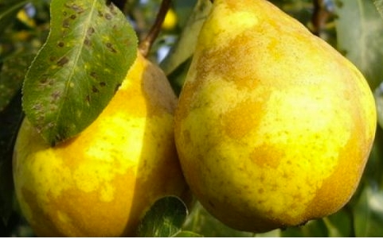

|  | Belle du mois d'AoûtLe favori incontestable parmi les variétés de poires d'été est Rosée du mois d'août, résultat du croisement des variétés Tenderness et Triumph Pakgam. L'arbre est assez bas, n'atteint pas et 10 m de hauteur, l'écorce est grise, lisse, les reins «se réveillent» rapidement après l'hiver. |
|  | Bere GiffardS'applique également aux variétés de poires d'été. Ils se distinguent des autres variétés par leurs fruits «rouges», leurs tons rouge orangé d’un côté de la poire et leurs nuances vert clair de l’autre. Formé sur une branche en grappes, à partir de 2 jusqu'à 6 des morceauxet conservez-le jusqu'à maturité. |
|  | williamsLa poire Williams est une variété ancienne encore très cultivée aujourd'hui puisqu'elle est la poire la plus cultivée dans le monde. C'est un fruit d'été, originaire du Royaume Uni, facile de culture. On l'aime pour sa chair juteuse et très parfumée qui s'apprécie crue mais aussi cuite dans de nombreuses recettes sucrées ou salées. |